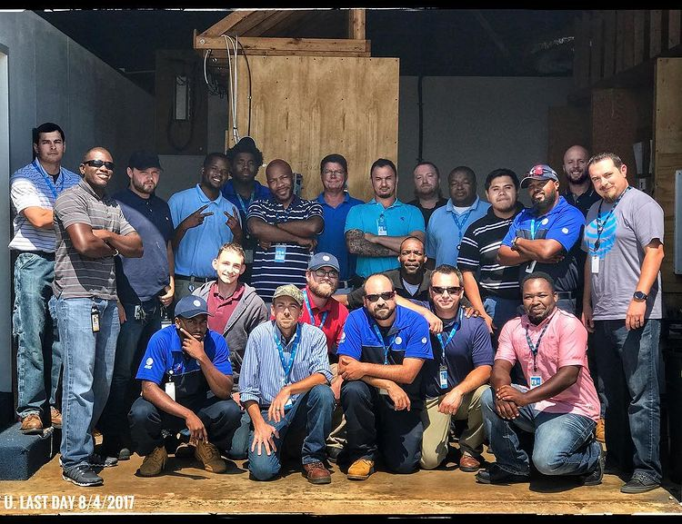

Family First
USMC Veteran. I have a competitive fire to be great at what I do in all phases of life. I find a way to master the basics and build on those to become a force in proficiency. Professionally I want to be an Azure Networking Administrator. Family and finding a way to give back to others are two of my most intense motivators. Clear communication, a team environment, and helping to empower others along the way are things I am looking for in an employer.

Honor graduate out of Parris Island, SC in 2012 for the United States Marine Corps. Squad leader and combat marksmanship coach, meritoriously promoted through the ranks to Sergeant. 2016, injured my back in a training exercise (4 herniated discs) honorable discharge after my 4 years were completed.

3 months training at AT&T Networking School in Charlotte, NC. Skills learned: networking terminology, splicing cables, network design, implementing mesh units/switches, implementing safety measures. In 2019, sold the most airties (mesh networks) for AT&T out of all Technicians in NC. Led by example in safety standards and proficiency standards inside of our team.
Experienced classes in pursuit of a degree in kinesiology to apply towards a physical therapy degree. Top 100 in GPA while attending UNCG and was invited to be a UNCG Marshall. Realized I had a stronger passion for IT and networking after learning more about the ever evolving field of IT and the room for growth in area expertise.
Searched for different avenues to approach the IT industry and found the Microsoft Software and Systems Academy for Server and Cloud Administration. Self studied to pass the IT Specialist Exam provided by Pearson. While waiting to be accepted into the program, studied networking terminology and took it upon myself to build a gaming PC due to my interest in sports and online games.